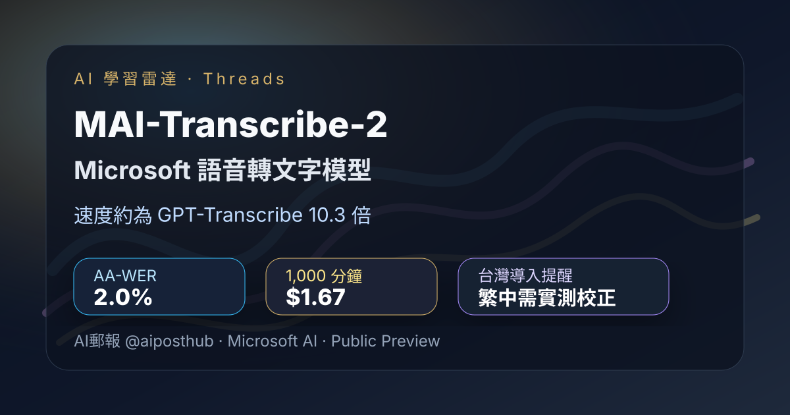
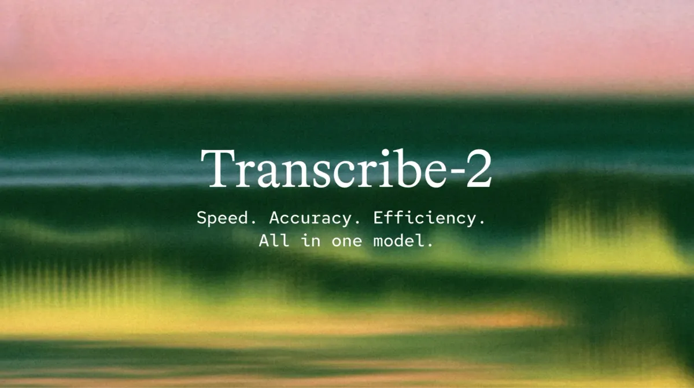

Threads｜AI郵報：Microsoft MAI-Transcribe-2 語音轉文字模型，速度、價格與繁中導入提醒

一句話摘要
AI郵報分享 Microsoft MAI-Transcribe-2 語音轉文字模型：主打比 GPT-Transcribe 快約 10 倍、每小時音訊 $0.10、支援說話者分離、逐字時間碼、Keyword Biasing 與 clean/verbatim 模式。重點不只是便宜，而是大量會議、客服、Podcast、課程字幕工作流的成本結構可能改變；但目前仍是 Public Preview，且繁體中文支援需自行實測與後處理。
來源脈絡
- Threads 分享連結：https://www.threads.com/share/BAXHkdl28s/
- Canonical：https://www.threads.com/@aiposthub/post/Dc226VIAZwE
- 作者：AI郵報（@aiposthub）
- 延伸文章：https://www.aiposthub.com/mai-transcribe-2-speech-to-text-model/
- Microsoft 官方發布：https://microsoft.ai/news/mai-transcribe-2-is-the-fastest-most-accurate-and-cheapest-speech-recognition-model-in-the-world/
貼文重點
- Microsoft 推出 MAI-Transcribe-2，官方稱長音訊推論可比 GPT-Transcribe 快約 10 倍。
- AI郵報整理的 benchmark：MAI-Transcribe-2 AA-WER 2.0%、速度 410.7 倍、1,000 分鐘約 $1.67；GPT-Transcribe AA-WER 3.3%、速度 40 倍、1,000 分鐘約 $4.50。
- 換算速度差約 10.3 倍，價格也讓大量錄音轉文字情境需要重新估算成本。
- 功能包含說話者分離、逐字時間碼、Keyword Biasing、自動語言辨識、60 種語言、clean / verbatim 兩種轉錄風格。
- 台灣導入的主要提醒：官方目前沒有明確列出繁體中文 zh-TW，若要服務台灣使用者，需測試簡轉繁、台灣用語轉換與專有名詞校正流程。
- 目前仍是 Public Preview，沒有正式 SLA，不宜直接放進正式 Production 工作流。
代表畫面
Microsoft 官方主視覺以抽象聲波呈現 MAI-Transcribe-2；官方發布文強調 diarization、configurable transcription styles、word-level timestamps，以及在 FLEURS 與 Artificial Analysis 上的速度 / 準確度表現。

AI郵報文章將此模型放在產品導入脈絡中，特別補上中文支援、價格、Public Preview 與台灣產品使用限制。
為什麼值得收進 AI 學習雷達
- 語音轉文字是課程、Podcast、會議紀錄、客服品檢與訪談整理的底層能力；若成本與速度被大幅壓低，上層工具會出現新一輪重估。
- 逐字時間碼讓 transcript 不只是文字，而是可搜尋、可定位、可剪輯的音訊索引，對內容後製和課程素材整理很有價值。
- Keyword Biasing 適合欒帥常見的課程、人名、學校、工具名、品牌名情境，可搭配自訂詞庫提升轉錄品質。
- Public Preview + 繁中未明列，是採用前必須記下的風險；這類資訊很適合作為之後做 ASR A/B Test 的檢核表。
導入檢核表
- 用真實台灣口音、教室收音、LINE 語音、Zoom / Teams 錄音測試，不只看官方 benchmark。
- 同步比較 Whisper、GPT-Transcribe、Gemini、MAI-Transcribe-2 的錯字率、速度、價格、說話者分離與專有名詞表現。
- 對繁中輸出建立後處理：簡轉繁、台灣用語修正、人名 / 課程名 / 工具名詞庫校正。
- 若是法務、醫療、客訴或合規紀錄，保留原音與 verbatim；若是課程摘要或字幕，可用 clean 版再進一步摘要。
- 正式導入前確認 SLA、資料處理地區、隱私條款、上傳檔案大小限制與最長音訊限制。
原始貼文節錄
Microsoft 這次直接來砸語音轉文字市場了 😭
剛推出的 MAI-Transcribe-2 官方直接喊：「比 GPT-Transcribe 快 10 倍。」而且 1 小時錄音的模型推論，大約 10 秒左右就能處理完。
更扯的是價格：1 小時音訊只要 $0.10 美元。Podcast、會議逐字稿、客服錄音這些工具，要開始重新算成本了。
Benchmark：MAI-Transcribe-2 AA-WER 2.0%、速度 410.7 倍、1,000 分鐘約 $1.67；GPT-Transcribe AA-WER 3.3%、速度 40 倍、1,000 分鐘約 $4.50；速度約 10.3 倍。
它把逐字稿常用功能包進來：多人說話者分離、逐字時間碼、專業名詞 Keyword Biasing、自動語言辨識、支援 60 種語言、clean / verbatim 兩種轉錄模式。
台灣使用者重要坑：官方目前沒有明確列出繁體中文 zh-TW，文件列的是 Chinese（simplified）和 Cantonese。若用於台灣產品，可能要加簡轉繁、台灣用語轉換、人名／專有名詞校正。現在仍是 Public Preview，沒有正式 SLA，Microsoft 也不建議直接丟進 Production。
原始連結
Threads：
https://www.threads.com/@aiposthub/post/Dc226VIAZwE
AI郵報文章：
https://www.aiposthub.com/mai-transcribe-2-speech-to-text-model/
Microsoft 官方發布：